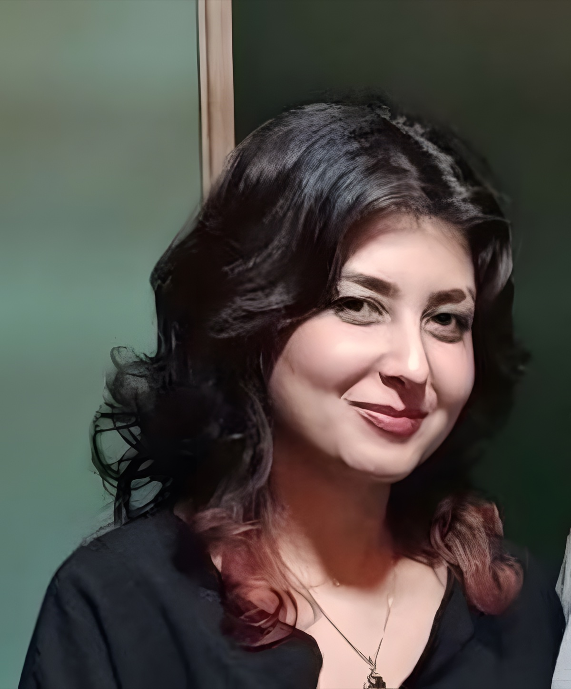

قبل از نوشتنِ هر محتوایی، دستکم پنج رقیبِ اصلی را بررسی میکنم.
کارشناس ارشد تولید محتوا استراتژی محتوا · سئو · نویسندگی

این سونیازِ مخاطب
آن سوهدفِ کسبوکار
«تخصصم را در پیدا کردنِ پُلی میانِ نیازِ مخاطب و هدفِ کسبوکار میبینم.»
من ریحانهام.
کارشناس ارشد تولید محتوا با ۵ سال سابقه در ایدهپردازی، طراحی و اجرای استراتژی محتوای دادهمحور برای حضور آنلاین کسبوکارها. در تولید محتوای شبکههای اجتماعی و وبسایت، بهینهسازی نرخ تبدیل، تحلیل رفتار مخاطب و سئوی تکنیکال هم تخصص دارم.
- سابقه
- ۵ سال
- تحصیلات
- ادبیات انگلیسی
- شهر
- تهران
فلسفهی کاریام
هرگز نباید کیفیت را قربانی دیدهشدن کرد.
محتوا فقط برای بازدید گرفتن نیست؛ با آن میشود مخاطب را به سمت وفاداری و استفاده از خدمات برد.
یادگیری
همان چیزی است که به من انگیزهی ادامه میدهد.
وقتِ استراحت
هم دنبال انجام کارهای خلاقانهام.
نمونهکار · اینستاگرام
یک قلم، پنج صدا.
همهی این جملهها را من نوشتهام؛ برای پنج برندِ متفاوت، با پنج لحنِ متفاوت. یکی را انتخاب کن.
نمونهکار · وبسایت و ترجمه
فهرستِ نوشتهها
مقالههای سئوشده و ترجمههایی که منتشر شدهاند. نشانگر را روی هر عنوان ببر تا ببینی در نتایج گوگل چه شکلی است.
تحلیل کمپین · تمرینِ نگاهکردن
اگر دستِ
من بود
وقتی تولید محتوا بخشی جداییناپذیر از زندگیات باشد، از کنار هیچ بیلبوردی ساده رد نمیشوی. هر بار با خودت میگویی: اگر این یکی دستِ من بود، چه میکردم؟
سوابق شغلی
از کارآموزی
تا کارشناس ارشد.
پنج سال، از آژانس تا هلدینگ تا تیمِ سئو. به پایین ادامه بده ←کارتها را بکش ←
۱۴۰۱۱۴۰۳
آژانس محتوایی
نیمفاصله
کارشناس ارشد تولید محتوا و استراتژی
- طراحی و اجرای تقویم محتوایی ماهانه برای کسبوکارهای مختلف (مثل خودروی برقی نبکا و هلیتاک) برای وبسایت، وبلاگ، ایمیل و شبکههای اجتماعی
- افزایش ترافیک ارگانیک و بهبود نرخ تبدیل با سئوی داخلی و A/B تست روی عنوانها و CTA
- پیادهسازی سئوی تکنیکال در محتوا؛ از متاتگها تا ساختار URL
- همکاری با تیم دیزاین برای اینفوگرافیک و ویدیوی آموزشی، برای بالا بردن نرخ نگهداشت مخاطب
همینجا با کارآموزی شروع کردم.
اسفند ۱۴۰۳تیر ۱۴۰۴
هلدینگ
بشری
تولید و مدیریت محتوا و بهینهسازی سئو
- مدیریت همهی شبکههای اجتماعی، تولید محتوای متنی و تصویری و بازبینی کیفی همهی خروجیها با چکلیست استاندارد
- ارتقای بازدید صفحهی لینکدین، کانال تلگرام و اینستاگرام
- مرتبکردن مطالب و بهبود سئوی وبسایت
- تمرکز بر برندسازی و تعیین استراتژی پرسونال برندینگ
آبان ۱۴۰۴فروردین ۱۴۰۵
پرانا
طب
کارشناس سئو و سایت
- تحلیل دادههای گوگل آنالیتیکس و سرچ کنسول برای پیدا کردن کلمات کلیدیِ پرحجم و کمرقابت
- تحلیل و بهروزرسانی مقالههای قبلیِ بلاگ و صفحههای دیگر سایت
- تولید و انتشار مقالههای جدیدِ سئوشده
ورودی ۱۳۹۵
ادبیات
انگلیسی
کارشناسی · دانشگاه دولتی لرستان، خرمآباد
از همینجا ترجمه به جعبهابزارم اضافه شد؛ مقالههای هلیتاک را از انگلیسی به فارسیِ خودمانی برگرداندهام.
برندهایی که برایشان نوشتهام
هلیتاک✦نبکا✦نیمفاصله✦استودیو نیکدل✦هلدینگ بشری✦پرانا طب✦شتابدهندهی هُنام✦APW✦
مهارتهای شغلی
جعبهابزار
استراتژی و تحلیل محتوا
- تحقیق کلمات کلیدی پیشرفته با Semrush، Ahrefs و Google Keyword Planner
- تحلیل رقبا و ممیزی محتوای سایت
- تولید محتوا برای هر مرحله از استراتژیِ تعیینشده
- سناریونویسی برای تبلیغات، طراحی کمپین و چالشهای اینستاگرامی (چالش ضدآفتاب هلیتاک)
- تحلیل نرخ پرش، نرخ خروج و مسیرهای تبدیل با گوگل آنالیتیکس
- A/B تست روی هدینگها، CTA و فرمتهای محتوا
سئوی فنی و محتوا
- بهینهسازی تایتل، متا دیسکریپشن، هدینگ مقالهها، لینکهای داخلی و خارجی و توضیحات تصاویر
اتوماسیون بازاریابی
- HubSpot و Mailchimp برای خبرنامه و بهروز نگهداشتنِ اطلاعات
مهارتهای جانبی
- آشنا با HTML و CSS
- Excel و Google Sheets برای تحلیل عملکرد محتوا و گزارشنویسی
- تسلط بر نگارش فارسی و نوشتنِ محتوای نو و جذاب
- پرامپتنویسی و کار با ابزارهای هوش مصنوعی
- WordPress
- Yoast
- Rank Math
- Google Analytics
- Search Console
- Semrush
- Ahrefs
- Keyword Planner
- HubSpot
- Mailchimp
- Canva
- Photoshop
- Illustrator
- CapCut
- Excel
- Sheets
- HTML
- CSS
- ChatGPT
- Claude
- DeepSeek
کارگاههایی که شرکت کردهام
دفترِ مشق
-
پیمان قدیمی
کارگاهِ «کمد لباس»
تمرکز این دوره روی آزاد کردنِ ذهنِ خلاق و بهکارگیریِ درستِ کلمات بود؛ با تمرینهایی مثل تغییرِ دریچهی نگاه به دنیا یا دقتِ بیشتر به اطراف.
-
فاطمه صوفی
کارگاهِ مشق نوشتن
عادتسازی، رها شدن از شلوغیِ ذهن و افکارِ بههمریخته، و تسلط بر قلم؛ اهدافی که خانم صوفی در این دوره آموزش دادند.
-
محمدمهدی باقری
کارگاهِ نگارش
رعایتِ اصولِ نوشتن و نگارشِ صحیح؛ تا از درستبودن و خوانابودنِ هر آنچه مینویسم مطمئن باشم.
-
رهنما کالج
گیرا و گویانویسی
یاد گرفتم پیامی را که میخواهم منتقل کنم، با قلمی شیوا و صریح بنویسم و مخاطب را درگیر کنم.
فقط یک ایمیل فاصله داریم.